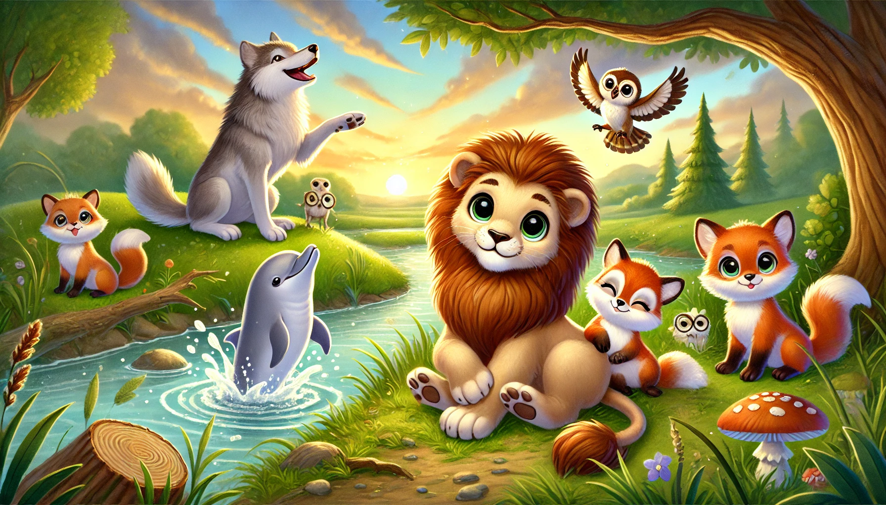

내면의 동물 찾기
당신 안에 숨겨진 본능을 발견해보세요! 몇 가지 질문에 답하면,
당신에게 가장 잘 맞는 동물을 찾아드립니다.
지금 시작하기
data-ad-format="auto" data-full-width-responsive="true">
당신의 내면의 동물은?
테스트 다시하기
결과 공유하기
data-ad-format="auto" data-full-width-responsive="true">